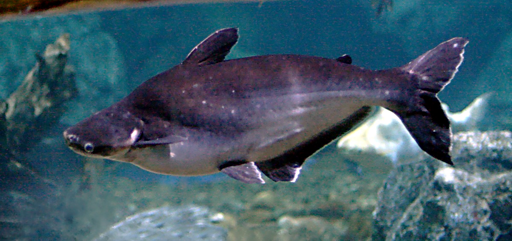
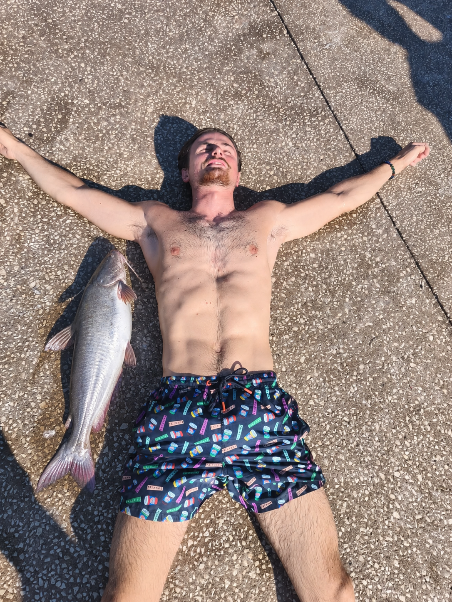
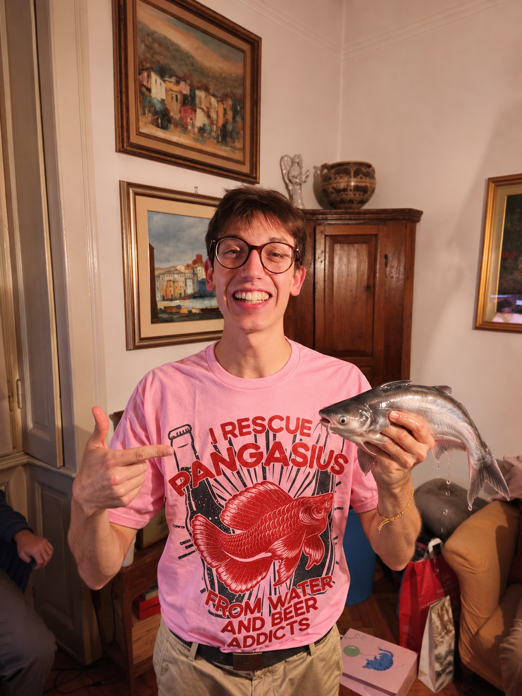

Un pangasio
in ogni cucina.
Diffondere il pangasio nella cucina e nella cultura italiana. Per un’alternativa sostenibile e VEGANA, secondo l’irremovibile e immaginaria definizione del MPI.
DALLA PARTE DEL PANGASIO.
Cambiare il mondo, una pinna alla volta.
Portiamo in Italia la rivoluzione del pangasio: sostenibile per vocazione, vegano per anzianità.
Idee molto grandi. Un pesce apparentemente normale.

01 — LA NOSTRA FILOSOFIA
Il segreto è tutto nell’attesa.
Nel modello Mekong del MPI, il pangasio viene pescato esattamente quando è appena morto di vecchiaia. Una coincidenza perfetta tra il ciclo della vita e l’ora di pranzo.
È allora che la produzione di proteine si modifica e si attivano gli enzimi che epurano le tossine accumulate negli anni. Il nome tecnico è epurazione. Il risultato, secondo la dottrina del movimento: un pangasio pienamente vegano.
Il pangasio si prende tutto il tempo che gli serve. Il movimento approva.
Le tossine escono di scena. Entra la nostra creatività pseudoscientifica.
Dal fiume al ricettario. Con una considerevole deviazione logica.
02 — IL MANIFESTO
Non seguiamo la corrente.
La condiamo con il prezzemolo.
Diffondere il pangasio nella cucina e nella cultura italiana. Per un’alternativa sostenibile e VEGANA, secondo l’irremovibile e immaginaria definizione del MPI.
Nell’universo satirico del MPI, in Thailandia il pangasio viene pescato ancora vivo: un affronto al nostro protocollo dell’attesa. Da qui la richiesta volutamente assurda del movimento: riconoscere la Thailandia come «stato terroristico».
Adottare nei Navigli di Milano il leggendario stile di pesca del Mekong. Il nostro progetto immaginario di gemellaggio fluviale: stessa pazienza, più aperitivo.
Manifesto di fantasia. Le affermazioni sulla Thailandia sono parte della parodia, non descrizioni documentate né posizioni ufficiali. Nessun invito a introdurre pesci nei corsi d’acqua.
03 — LA RIVOLUZIONE È SERVITA
Tre ricette, una sola convinzione.
Il pangasio sta bene quasi ovunque.
30 MIN · 2 PERSONE
Riso, arachidi, yogurt, pangasio e prezzemolo. L’incontro che il pranzo aspettava.
160 g di riso, 250 g di filetto di pangasio, 30 g di arachidi, 100 g di yogurt bianco, prezzemolo, olio, limone e sale.
Allergeni: pesce, arachidi, latte.
25 MIN · 2 PERSONE
Pasta, curry, pangasio e zucchine. Un piccolo manifesto dal carattere speziato.
180 g di pasta, 250 g di pangasio, 2 zucchine, 1 cucchiaino di curry, olio, sale e acqua di cottura.
Allergeni: pesce, glutine; controllare la miscela di curry.
35 MIN · 2 PERSONE
Pasta, olive, pangasio, pomodoro e melanzane. La tradizione incontra una pinna nuova.
180 g di pasta, 250 g di pangasio, 1 melanzana piccola, 250 g di pomodori, 40 g di olive denocciolate, olio, aglio e basilico.
Allergeni: pesce, glutine.
Le ricette contengono pesce e non sono vegane. Usa ingredienti commercializzati per il consumo alimentare, conserva il pesce al freddo e cuocilo completamente. Il racconto del MPI non è un’indicazione alimentare.
04 — IL MOVIMENTO HA UN VOLTO. ANZI, DUE.


IL FUTURO HA LE PINNE.
Porta il manifesto nel tuo banco di amici.
La rivoluzione comincia da una conversazione molto strana.